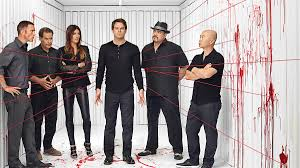

Dexter
Dexter is a crime drama series that follows Dexter Morgan, a forensic blood spatter analyst who secretly lives as a serial killer. Working for the Miami Metro Police Department, Dexter uses his position to hide his double life while carefully selecting criminals who have escaped justice. Guided by a strict moral code taught to him by his adoptive father, he only kills those he believes deserve it. The show explores the psychological conflict between Dexter’s dark urges and his desire to appear normal. Tension builds as his relationships with coworkers, friends, and family become increasingly complicated. Each season introduces new threats that challenge Dexter’s ability to stay hidden. Overall, Dexter examines morality, identity, and the fine line between justice and violence.
